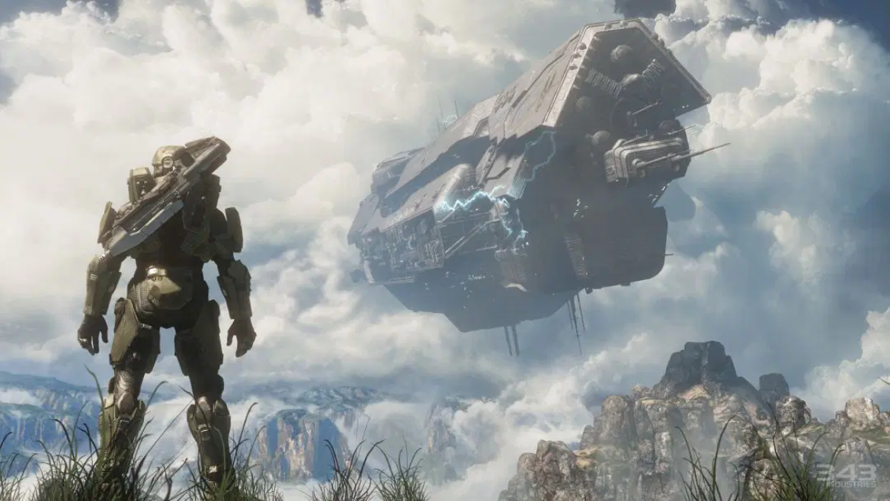
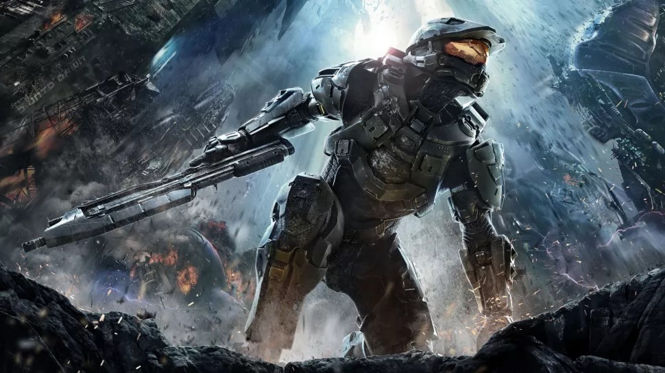
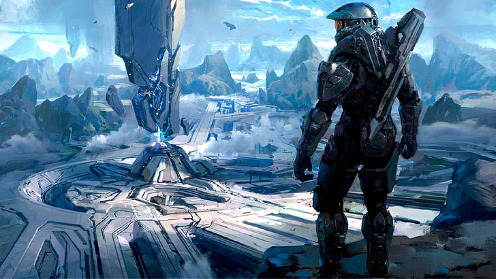
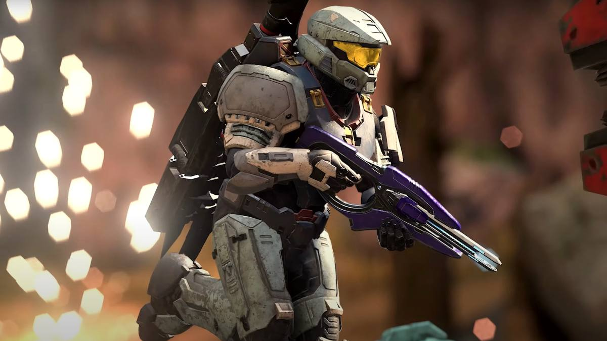
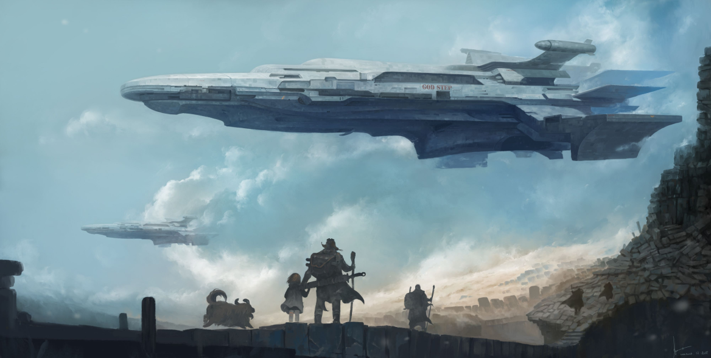

Halo (video game)
Halo is a military science fiction media franchise originally created by Bungie. The franchise is currently managed and developed by 343 Industries, and owned and published by Xbox Game Studios. Primarily taking place in the 26th century, the franchise centers on conflict between humanity and a variety of alien species. The artifacts of a long-disappeared race, the Forerunners, play a key role; the eponymous Halo Array are immense, habitable and ring-shaped superweapons that were created by the Forerunners to destroy the parasitic Flood, but which the alien Covenant mistake for religious artifacts of transcendence. The series launched with the first-person shooter video game Halo: Combat Evolved and its tie-in novel, The Fall of Reach in 2001. The latest main game, Halo Infinite, was released in 2021. The games in the series are critically acclaimed, with the original considered the Xbox's "killer app". This led to the term "Halo killer" being used to describe console games that aspire, or are considered, to be better than Halo. Fueled by the success of Halo: Combat Evolved and marketing, its sequels went on to record-breaking sales.The games had sold over 81 million copies worldwide, with more than $6 billion in franchise grosses. Halo has since become one of the highest-grossing media franchises of all time, spanning multiple best-selling novels, graphic novels, comic books, short movies, animated movies and feature films, as well as other licensed products.
Plot
Chapter 1
While a group of four stray cats trek through the ruins of an abandoned facility, one becomes separated from the others after jumping on a loose pipe, falling into a chasm, and finding itself trapped in an unpopulated underground city. The cat soon finds a lab where it helps download an artificial intelligence into the body of a small drone, who calls itself B-12. It explains that it previously helped a scientist but much of its memory was corrupted and needs time to recover. B-12 promises to help the cat return to the surface and accompanies it further into the city. As they travel farther, the pair discover that, while the city is completely devoid of human life, their robotic servants, Companions, remain. In the time of humanity's absence, the Companions have grown self-aware and have built their own society among the ruins of the city, but they likewise are trapped underground. The ruins are also infested with Zurks, mutant creatures that have evolved to devour both organic life and robots.
Chapter 2
Nearly a hundred thousand years later in the 26th century, humanity under the auspices of the United Nations Space Command, or UNSC—colonized many worlds thanks to the development of faster-than-light "slipstream space" (i.e. hyperspace) travel. Tensions between the government and colonies desiring independence sparked violent clashes. The UNSC sponsored the SPARTAN-II Project to create an elite group of enhanced supersoldiers to suppress the rebellions covertly. In the year 2525, human worlds come under attack by an theocratic alliance of alien races known as the Covenant, whose leadership declared humanity heretics and an affront to their gods—the Forerunners. The Covenant began a genocidal holy war. Their superior technology and numbers proved decisive advantages; though effective, the Spartans were too few in number to turn the tide of battle in humanity's favor. After the Covenant invaded Reach, the UNSC's last major stronghold besides Earth, Master Chief John-117 was left as one of the few remaining Spartans.
Game series
Chapter 1
The games of the original Halo trilogy were developed by Bungie, and are first-person shooters in which the player experiences most action from the protagonist's perspective. The first title in the series is Halo: Combat Evolved on Xbox, released on November 15, 2001. The game was initially intended to be released for Windows and macOS, until Microsoft's purchase of Bungie in 2000 led to the game becoming an Xbox launch title and delaying any release for personal computers for 2 years. Halo: Combat Evolved introduced many gameplay and plot themes common to the whole trilogy. Players battle various aliens on foot and in vehicles to complete objectives, while attempting to uncover the secrets of the eponymous Halo. One concept introduced in Halo: Combat Evolved, is limiting the number of weapons players could carry to two, forcing them to carefully select their preferred armament. Players fight with ranged and melee attacks, as well as a limited number of grenades. Bungie refers to the "weapons-grenades-melee" format as the "Golden Triangle of Halo", which has remained fundamentally unchanged throughout the trilogy. In Halo: Combat Evolved, the player's health is measured in both hit points and a continually recharging energy shield; the sequels forgo the hit point system, although it returns in spin-offs. A Windows and Mac OS X port was later developed by Gearbox Software, and released on September 30 and November 11, 2003, respectively. A stand-alone expansion, entitled Halo: Custom Edition, was released as a Windows exclusive, and allowed players to create custom content for the game.
Chapter 2
Its sequel, Halo 2 was released on the Xbox on November 9, 2004, and later for Windows Vista on May 17, 2007. For the first time, the game was released in two different editions: a standard edition with just the game disc and traditional Xbox packaging; and the Collector's Edition with a specially designed aluminum case, along with an additional bonus DVD, extra booklet, and slightly different user manual. Halo 2 introduced new gameplay elements, chief among them the ability to hold and fire two weapons simultaneously, known as "dual-wielding". Unlike its predecessor, Halo 2 fully supported online multiplayer via Xbox LIVE. The game uses "matchmaking" to facilitate joining online matches by grouping players looking for certain types of games. This was a change from the more traditional "server list" approach, which was used to find matches in online games at this time. Upon release, Halo 2 became the game played by the most people on the Xbox Live service that week; it retained this title for over two years the longest streak any game has held the spot.
Chapter 3
Halo 3 is the final game in the original Halo trilogy, ending the story arc begun in Halo: Combat Evolved. The game was released on the Xbox 360 on September 25, 2007. It adds to the series vehicles, weapons, and a class of items called equipment. The game also includes a limited map-editing tool, known as the Forge, which allows players to insert game objects, such as weapons and vehicles, into existing multiplayer map geometry. Players can save a recording of their gameplay sessions, and view them as video, from any angle.
Chapter 4
At E3 2014, Microsoft and 343 Industries announced Halo: The Master Chief Collection, released on November 11, 2014, for the Xbox One. The game includes the full campaign and multiplayer modes of Halo: Combat Evolved, Halo 2, Halo 3, and Halo 4. The campaign of Halo 3: ODST was later released as downloadable content, and was free for those who bought The Master Chief Collection during late 2014.
Music
Chapter 1
Martin O'Donnell and Michael Salvatori produced much of the music for Bungie's Halo games. Approached by Bungie to produce something ancient and mysterious for Halo's debut, O'Donnell decided to compose a theme using Gregorian chant, with him joining in with others to sing the vocal parts.[109] Due to the varying nature of gameplay, the music was designed to use change dynamically based on the gameplay.To afford a more enjoyable listening experience, O'Donnell rearranged portions of the music of Halo into standalone suites, which follow the narrative course of the game, for the soundtrack releases.For Halo 2, the soundtrack included licensed music from Incubus and Breaking Benjamin alongside the orchestral score; rock guitar virtuoso, Steve Vai, performed various solos throughout the score.
Chapter 2
For Halo 2's soundtrack, producer Nile Rodgers and O'Donnell decided to split the music into two separate volumes. The first, Volume One, was released on November 9, 2004, and contained all the themes as well as the "inspired-by" music present in the game (featuring Steve Vai, Incubus, Hoobastank, and Breaking Benjamin). The second release, Volume 2, contained the rest of the music, much of which was incomplete or not included in the first soundtrack, as the first soundtrack was shipped before the game was released. Halo 2, unlike its predecessor, was mixed to take full advantage of Dolby 5.1 Digital Surround Sound.[ In 2014, the in-game music was rerecorded and remastered for the Halo 2 Anniversary release which was part of the Master Chief Collection which included remastered versions of all Halo games with Master Chief as the protagonist.
Chapter 3
The soundtrack for Halo 3 was released on November 20, 2007. O'Donnell noted he wanted to bring back the themes from the original game to help tie together the end of the trilogy. The tracks are presented, similarly to the previous soundtrack for Halo 2, in a suite form. Unlike previous soundtracks, where much of the music had been synthesized on computer, the soundtrack for Halo 3 was recorded using a 60-piece orchestra, along with a 24-voice chorus. The final soundtrack was recorded by the Northwest Sinfonia at Studio X in Seattle, Washington. The soundtracks were bundled and released as a box set in December 2008.A soundtrack for Halo 3: ODST was released alongside the game and included many of the tracks from the game.
Chapter 4
For Bungie's last game in the Halo series, Halo: Reach, Martin O'Donnell and Michael Salvatori returned to compose the soundtrack. O'Donnell wrote "somber, more visceral" music to reflect the darker nature of the campaign and style of the game. As Bungie had been making Halo 3: ODST and Halo: Reach at the same time, Martin O'Donnell had also been composing the soundtracks at the same time, but production for the music of Halo: Reach did not begin until after the release of Halo 3: ODST. The soundtrack was released on iTunes on September 15, 2010, and in a two-disc set on September 28, 2010.
Chapter 5
For Halo Wars, the task of creating the game's music fell to Stephen Rippy. Rippy listened to O'Donnell's soundtracks for inspiration and incorporated the Halo theme into parts of his arrangements. In addition to synthesized and orchestral components, the composer focused on the choir and piano as essential elements, feeling these were important in creating the "Halo sound".[120] Rather than use the Northwest Sinfonia, Rippy traveled to Prague and recorded with the FILMharmonic Orchestra before returning to the United States to complete the music. A standalone compact disc and digital download retail version of the soundtrack was announced in January 2009 for release on February 17.
Chapter 6
The music of Halo 4 was composed by Neil Davidge and Kazuma Jinnouchi. The Halo 4 Original Soundtrack was released on October 22, 2012, followed by a two-disc Special Edition on November 6. Neil Davidge served as an out-of-house composer for 343 Industries which proved to be very expensive leading Kazuma Jinnouchi to take over the responsibility of music production for Halo 5: Guardians. The music by Neil Davidge and Kazuma Jinnouchi for Halo 4 received mixed reviews, being recognized as creative music but too different from the original Halo formula.
Adaptions
The Halo franchise includes various types of merchandise and adaptations outside of the video games. This includes bestselling novels, graphic novels, and other licensed products, from action figures to a packaging tie-in with Mountain Dew. Numerous action figures and vehicles based on Halo have been produced. Joyride Studios created Halo and Halo 2 action figures, while Halo 3 poseable and collectible action figures, aimed at collectors, were produced by McFarlane Toys and became some of the top-selling action figures of 2007 and 2008. MEGA Bloks partnered with Microsoft to produce Halo Wars-themed toys.
Reception
| Game | Metacritic |
|---|---|
| Halo: Combat Evolved | Xbox: 97 PC: 83 |
| Halo 2 | Xbox: 95 PC: 72 |
| Halo 3 | Xbox 360: 94 PC: 88 |
| Halo Wars | Xbox 360: 82 |
| Halo 3: ODST | Xbox 360: 83 |
| Halo: Reach | Xbox 360: 91 PC: 81 |
| Halo: Combat Evolved Anniversary | Xbox 360: 82 PC: 79 |
| Halo 4 | Xbox 360: 87 |
| Halo: Spartan Assault | PC: 70 Xbox One: 53 Xbox 360: 51 |
| Halo: The Master Chief Collection | Xbox One: 85 |
| Halo: Spartan Strike | iOS: 86 PC: 66 |
| Halo 5: Guardians | Xbox One: 84 |
| Halo Wars 2 | Xbox One: 79 PC: 70 |
| Halo Infinite | Xbox Series X/S: 87 PC: 81 |